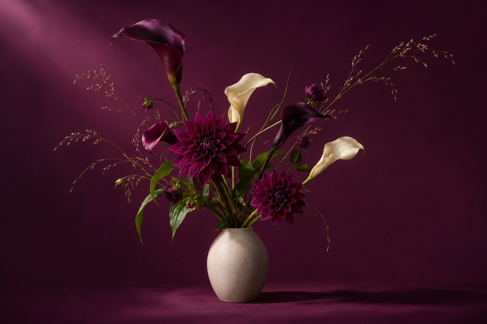

Floristik für Feste
Blüten
Blüten
nach Gefühl.
Vom Strauß fürs Standesamt bis zur langen Tafel. Wir gestalten mit dem, was die Jahreszeit hergibt.
Den ersten Entwurf planen
Für den ersten Entwurf genügen Anlass, Datum und ein Foto vom
Raum. Eine Lieblingsblüte oder ein Stoffmuster gibt uns die
Farbrichtung.